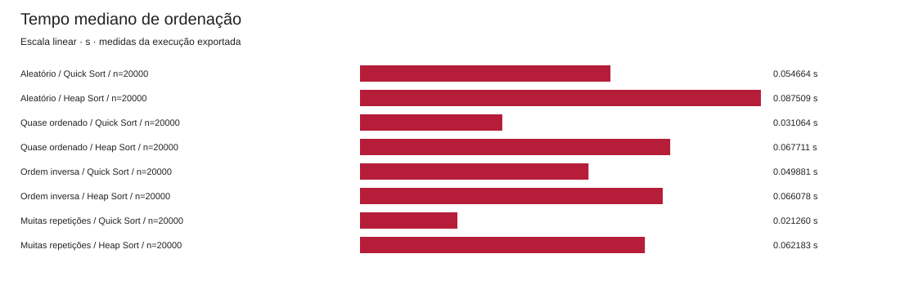
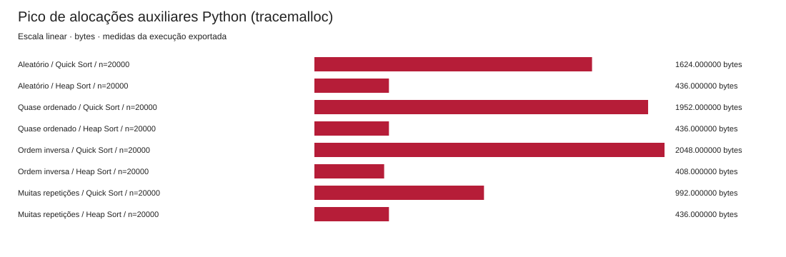

Execução iniciada em UTC: 2026-11-10T12:25:51.434407+00:00. Esta página contém medições; não é o relatório acadêmico.
{
"python": "3.12.14 (main, Aug 25 2026, 14:01:42) [MSC v.1944 64 bit (AMD64)]",
"sistema": "Windows-11-10.0.26200-SP0",
"processador": "Intel64 Family 6 Model 186 Stepping 2, GenuineIntel",
"metodo": {
"tempo": "perf_counter; apenas ordenação; mediana de execuções sem instrumentação",
"memoria": "Uma execução separada por combinação: pico de alocações Python rastreadas por tracemalloc. Exclui entrada, cópia e validação; não é RSS do processo.",
"entrada": "Primeiros n registros originais, cópia nova em cada execução; CSV não alterado.",
"aquecimento": "Uma chamada por algoritmo com 100 registros antes de medir cada cenário/tamanho.",
"ordem": "Ordem dos algoritmos alternada entre repetições; garbage collector mantido habilitado.",
"validacao": "Ordem crescente e Counter dos pares (name, score) após cada execução.",
"quick": "Pivô central, três regiões, pilha explícita; diferente do pivô inicial da tabela do professor.",
"escopo": "Quick Sort e Heap Sort, conforme orientação específica do grupo informada pelo usuário."
}
}
O pico medido não corresponde à memória total do programa. Os tempos de memória não são incluídos na mediana.
| cenario | algoritmo | n | obrigatorio | mediana_s | min_s | max_s | pico_memoria_bytes | execucoes_memoria | validado |
|---|---|---|---|---|---|---|---|---|---|
| Aleatório | Quick Sort | 20000 | True | 0.05466369999339804 | 0.047823900007642806 | 0.05922269995789975 | 1624 | 1 | True |
| Aleatório | Heap Sort | 20000 | True | 0.08750919997692108 | 0.08004619996063411 | 0.1045358000556007 | 436 | 1 | True |
| Quase ordenado | Quick Sort | 20000 | True | 0.031064499984495342 | 0.023368699999991804 | 0.04797399998642504 | 1952 | 1 | True |
| Quase ordenado | Heap Sort | 20000 | True | 0.06771060003666207 | 0.06673129997216165 | 0.07661809999262914 | 436 | 1 | True |
| Ordem inversa | Quick Sort | 20000 | True | 0.04988069995306432 | 0.04409659997327253 | 0.05351279996102676 | 2048 | 1 | True |
| Ordem inversa | Heap Sort | 20000 | True | 0.06607820000499487 | 0.06565679999766871 | 0.08906839997507632 | 408 | 1 | True |
| Muitas repetições | Quick Sort | 20000 | True | 0.021260000008624047 | 0.01646339998114854 | 0.026322500023525208 | 992 | 1 | True |
| Muitas repetições | Heap Sort | 20000 | True | 0.06218310003168881 | 0.04538749996572733 | 0.06777530000545084 | 436 | 1 | True |


Tempos individuais, hashes dos arquivos e metadados completos: medicoes.json. Tabela para planilha: medicoes.csv.